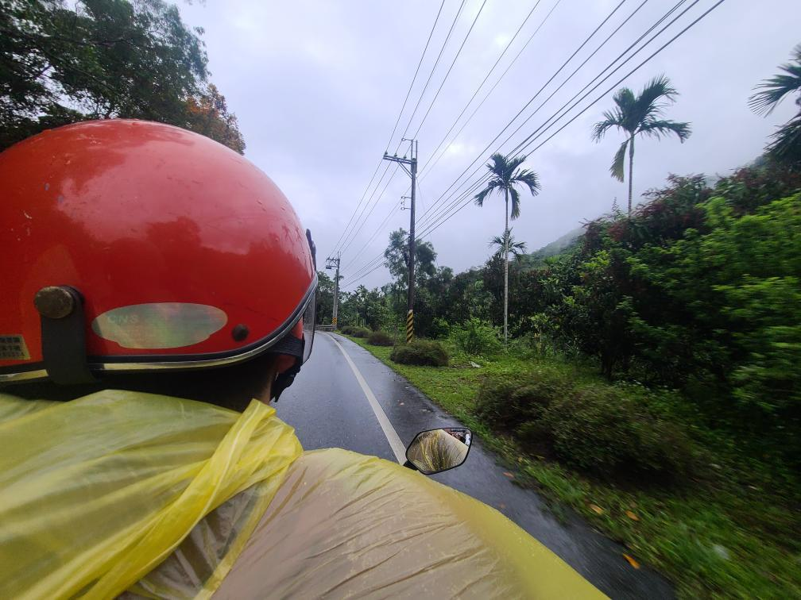
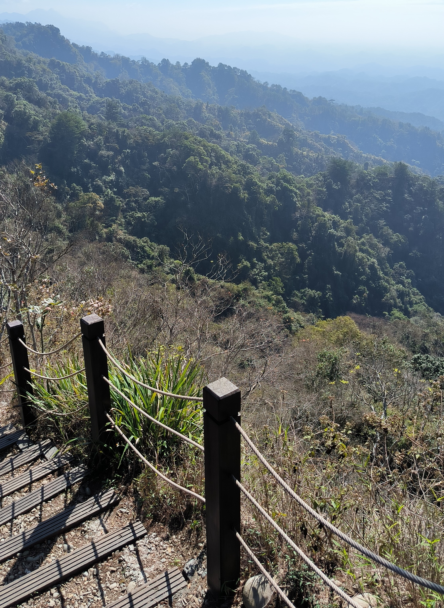
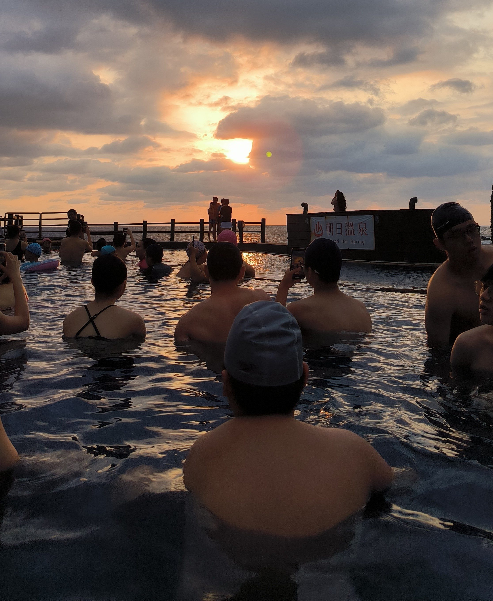

首頁
歡迎光臨。
這裏我把所發現的台灣特色、意見等等在這裏記下。
歡迎光臨。
這裏我把所發現的台灣特色、意見等等在這裏記下。

自從我來台之後，我簡直離不開它。無論福爾摩沙的風格、四季如春的氣候、數以億計的古跡或熱情的台灣人，都給我留下深刻印象。譬如，以上的照片取景於高雄的佛光山寺。當地的泥土教我怎麽拜。下面的照片就是我在臺東騎機車，也是我第一次在台灣騎機車。我和台灣的朋友一起從臺東騎到花蓮，簡直令人難忘。
 就算有人對爬山感興趣，台灣算是一種爬山的天堂。別説高度最高的玉山，就是南投的合歡山、新北的陽明山或臺中的大坑和古關，台灣的山區較爲多。此外，不少步道的植物包含咖啡豆、有毒與無毒的芋頭和黑胡椒，都可以自由自在地採。爬山也提供免費的臺語課，因台灣山的阿嫲跟阿公為大宗。
再説，在台灣的文化中，泡溫泉尤屬台灣的精華。據稱泡溫泉有利於健康，也能吃不少的小吃。不過百聞不如一見，於是我去綠島的朝日溫泉看日出。此經驗讓我愜意地蹲在水裏、煮溫泉蛋等等，才讓我瞭解台灣之美。
總而言之，台灣屬於多元之美的國家。除氣象、觀光景點、風景與食物（尤其臭豆腐）外，也有台灣的音樂。如果有人問我台灣如何，我雙手雙脚表示：台灣讚！
哈嘍 大家好 我是潘碩彥。因爲台灣給我留下深刻印象，所以我把to-siā這個網站當作我爲台灣的慶祝。
男。來自捷克。東海大學的交換生。金牛座。屬兔。臺獨分子。